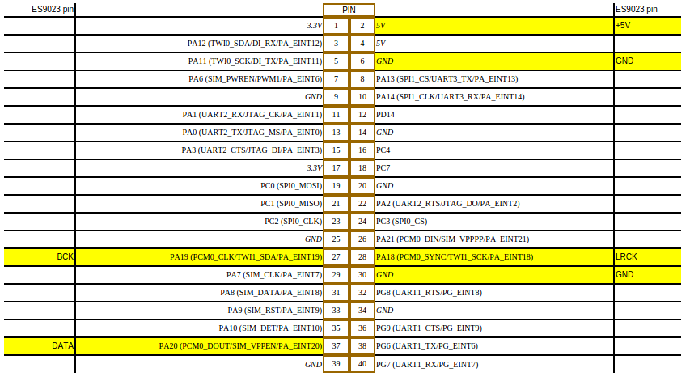

H3/H2+
H2+是H3的裁剪版，去掉了千兆和4K解码的支持。
H3 GPIO图

H3/PIO
<H3
Programmable I/O Pins (WIP)
| Port Bank A |
|---|
| Port | Ball | Type | MUX 2 | MUX 3 | MUX 4 | MUX 5 | MUX 6 | MUX 7 |
|---|---|---|---|---|---|---|---|---|
| PA00 | D11 | I/O | UART2_TX | JTAG_MS | reserved | reserved | PA_EINT0 | reserved |
| PA01 | D5 | I/O | UART2_RX | JTAG_CK | reserved | reserved | PA_EINT1 | reserved |
| PA02 | D6 | I/O | UART2_RTS | JTAG_DO | reserved | reserved | PA_EINT2 | reserved |
| PA03 | E13 | I/O | UART2_CTS | JTAG_DI | reserved | reserved | PA_EINT3 | reserved |
| PA04 | F5 | I/O | UART0_TX | reserved | reserved | reserved | PA_EINT4 | reserved |
| PA05 | H6 | I/O | UART0_RX | PWM0 | reserved | reserved | PA_EINT5 | reserved |
| PA06 | E14 | I/O | SIM_PWREN | PWM1 | reserved | reserved | PA_EINT6 | reserved |
| PA07 | D8 | I/O | SIM_CLK | reserved | reserved | reserved | PA_EINT7 | reserved |
| PA08 | F13 | I/O | SIM_DATA | reserved | reserved | reserved | PA_EINT8 | reserved |
| PA09 | D13 | I/O | SIM_RST | reserved | reserved | reserved | PA_EINT9 | reserved |
| PA10 | E11 | I/O | SIM_DET | reserved | reserved | reserved | PA_EINT10 | reserved |
| PA11 | F11 | I/O | TWI TWI0_SCK | DI_TX | reserved | reserved | PA_EINT11 | reserved |
| PA12 | C13 | I/O | TWI TWI0_SDA | DI_RX | reserved | reserved | PA_EINT12 | reserved |
| PA13 | E15 | I/O | SPI1_CS | UART3_TX | reserved | reserved | PA_EINT13 | reserved |
| PA14 | G12 | I/O | SPI1_CLK | UART3_RX | reserved | reserved | PA_EINT14 | reserved |
| PA15 | F14 | I/O | SPI1_MOSI | UART3_RTS | reserved | reserved | PA_EINT15 | reserved |
| PA16 | D15 | I/O | SPI1_MISO | UART3_CTS | reserved | reserved | PA_EINT16 | reserved |
| PA17 | C14 | I/O | OWA_OUT | reserved | reserved | reserved | PA_EINT17 | reserved |
| PA18 | B13 | I/O | PCM0_SYNC | TWI TWI1_SCK | reserved | reserved | PA_EINT18 | reserved |
| PA19 | B14 | I/O | PCM0_CLK | TWI TWI1_SDA | reserved | reserved | PA_EINT19 | reserved |
| PA20 | A13 | I/O | PCM0_DOUT | SIM_VPPEN | reserved | reserved | PA_EINT20 | reserved |
| PA21 | A14 | I/O | PCM0_DIN | SIM_VPPPP | reserved | reserved | PA_EINT21 | reserved |
| Port Bank C |
|---|
| Port | Ball | Type | MUX 2 | MUX 3 | MUX 4 | MUX 5 | MUX 6 | MUX 7 |
|---|---|---|---|---|---|---|---|---|
| PC00 | C15 | I/O | NAND_WE# | SPI0_MOSI | reserved | reserved | reserved | reserved |
| PC01 | C16 | I/O | NALE | SPI0_MISO | reserved | reserved | reserved | reserved |
| PC02 | B16 | I/O | NCLE | SPI0_CLK | reserved | reserved | reserved | reserved |
| PC03 | B15 | I/O | NCE1 | SPI0_CS | reserved | reserved | reserved | reserved |
| PC04 | F16 | I/O | NCE0 | reserved | reserved | reserved | reserved | reserved |
| PC05 | A17 | I/O | NRE# | SDC2_CLK | reserved | reserved | reserved | reserved |
| PC06 | E16 | I/O | NRB0 | SDC2_CMD | reserved | reserved | reserved | reserved |
| PC07 | A16 | I/O | NRB1 | reserved | reserved | reserved | reserved | reserved |
| PC08 | B18 | I/O | NDQ0 | SDC2_D0 | reserved | reserved | reserved | reserved |
| PC09 | C17 | I/O | NDQ1 | SDC2_D1 | reserved | reserved | reserved | reserved |
| PC10 | D17 | I/O | NDQ2 | SDC2_D2 | reserved | reserved | reserved | reserved |
| PC11 | C18 | I/O | NDQ3 | SDC2_D3 | reserved | reserved | reserved | reserved |
| PC12 | B17 | I/O | NDQ4 | SDC2_D4 | reserved | reserved | reserved | reserved |
| PC13 | B19 | I/O | NDQ5 | SDC2_D5 | reserved | reserved | reserved | reserved |
| PC14 | F17 | I/O | NDQ6 | SDC2_D6 | reserved | reserved | reserved | reserved |
| PC15 | C19 | I/O | NDQ7 | SDC2_D7 | reserved | reserved | reserved | reserved |
| PC16 | H16 | I/O | NDQS | SDC2_RST | reserved | reserved | reserved | reserved |
| Port Bank D |
|---|
| Port | Ball | Type | MUX 2 | MUX 3 | MUX 4 | MUX 5 | MUX 6 | MUX 7 |
|---|---|---|---|---|---|---|---|---|
| PD00 | C21 | I/O | RGMII_RXD3/MII_RXD3/RMII_NULL | reserved | reserved | reserved | reserved | reserved |
| PD01 | H17 | I/O | RGMII_RXD2/MII_RXD2/RMII_NULL | reserved | reserved | reserved | reserved | reserved |
| PD02 | B20 | I/O | RGMII_RXD1/MII_RXD1/RMII_RXD1 | reserved | reserved | reserved | reserved | reserved |
| PD03 | H18 | I/O | RGMII_RXD0/MII_RXD0/RMII_RXD0 | reserved | reserved | reserved | reserved | reserved |
| PD04 | A20 | I/O | RGMII_RXCK/MII_RXCK/RMII_NULL | reserved | reserved | reserved | reserved | reserved |
| PD05 | F19 | I/O | RGMII_RXCTL/MII_RXDV/RMII_CRS_DV | reserved | reserved | reserved | reserved | reserved |
| PD06 | B21 | I/O | RGMII_NULL/MII_RXERR/RMII_RXER | reserved | reserved | reserved | reserved | reserved |
| PD07 | E18 | I/O | RGMII_TXD3/MII_TXD3/RMII_NULL | reserved | reserved | reserved | reserved | reserved |
| PD08 | E20 | I/O | RGMII_TXD2/MII_TXD2/RMII_NULL | reserved | reserved | reserved | reserved | reserved |
| PD09 | F21 | I/O | RGMII_TXD1/MII_TXD1/RMII_TXD1 | reserved | reserved | reserved | reserved | reserved |
| PD10 | H19 | I/O | RGMII_TXD0/MII_TXD0/RMII_TXD0 | reserved | reserved | reserved | reserved | reserved |
| PD11 | F20 | I/O | RGMII_NULL/MII_CRS/RMII_NULL | reserved | reserved | reserved | reserved | reserved |
| PD12 | E19 | I/O | RGMII_TXCK/MII_TXCK/RMII_TXCK | reserved | reserved | reserved | reserved | reserved |
| PD13 | K17 | I/O | RGMII_TXCTL/MII_TXEN/RMII_TXEN | reserved | reserved | reserved | reserved | reserved |
| PD14 | L17 | I/O | RGMII_NULL/MII_TXERR/RMII_NULL | reserved | reserved | reserved | reserved | reserved |
| PD15 | K18 | I/O | RGMII_CLKIN/MII_COL/RMII_NULL | reserved | reserved | reserved | reserved | reserved |
| PD16 | L18 | I/O | MDC | reserved | reserved | reserved | reserved | reserved |
| PD17 | L19 | I/O | MDIO | reserved | reserved | reserved | reserved | reserved |
| Port Bank E |
|---|
| Port | Ball | Type | MUX 2 | MUX 3 | MUX 4 | MUX 5 | MUX 6 | MUX 7 |
|---|---|---|---|---|---|---|---|---|
| PE00 | B10 | I/O | CSI_PCLK | TS_CLK | reserved | reserved | reserved | reserved |
| PE01 | A10 | I/O | CSI_MCLK | TS_ERR | reserved | reserved | reserved | reserved |
| PE02 | B11 | I/O | CSI_HSYNC | TS_SYNC | reserved | reserved | reserved | reserved |
| PE03 | C10 | I/O | CSI_VSYNC | TS_DVLD | reserved | reserved | reserved | reserved |
| PE04 | C9 | I/O | CSI_D0 | TS_D0 | reserved | reserved | reserved | reserved |
| PE05 | E10 | I/O | CSI_D1 | TS_D1 | reserved | reserved | reserved | reserved |
| PE06 | D10 | I/O | CSI_D2 | TS_D2 | reserved | reserved | reserved | reserved |
| PE07 | C8 | I/O | CSI_D3 | TS_D3 | reserved | reserved | reserved | reserved |
| PE08 | C11 | I/O | CSI_D4 | TS_D4 | reserved | reserved | reserved | reserved |
| PE09 | C12 | I/O | CSI_D5 | TS_D5 | reserved | reserved | reserved | reserved |
| PE10 | E8 | I/O | CSI_D6 | TS_D6 | reserved | reserved | reserved | reserved |
| PE11 | A11 | I/O | CSI_D7 | TS_D7 | reserved | reserved | reserved | reserved |
| PE12 | B12 | I/O | CSI_SCK | TWI2_SCK | reserved | reserved | reserved | reserved |
| PE13 | C7 | I/O | CSI_SDA | TWI2_SDA | reserved | reserved | reserved | reserved |
| PE14 | C6 | I/O | reserved | reserved | reserved | reserved | reserved | reserved |
| PE15 | C5 | I/O | reserved | reserved | reserved | reserved | reserved | reserved |
| Port Bank F |
|---|
| Port | Ball | Type | MUX 2 | MUX 3 | MUX 4 | MUX 5 | MUX 6 | MUX 7 |
|---|---|---|---|---|---|---|---|---|
| PF00 | D19 | I/O | SDC0_D1 | JTAG_MS | reserved | reserved | reserved | reserved |
| PF01 | A19 | I/O | SDC0_D0 | JTAG_DI | reserved | reserved | reserved | reserved |
| PF02 | D20 | I/O | SDC0_CLK | UART0_TX | reserved | reserved | reserved | reserved |
| PF03 | F18 | I/O | SDC0_CMD | JTAG_DO | reserved | reserved | reserved | reserved |
| PF04 | E21 | I/O | SDC0_D3 | UART0_RX | reserved | reserved | reserved | reserved |
| PF05 | C20 | I/O | SDC0_D2 | JTAG_CK | reserved | reserved | reserved | reserved |
| PF06 | G18 | I/O | SDC0_DET | reserved | reserved | reserved | reserved | reserved |
| Port Bank G |
|---|
| Port | Ball | Type | MUX 2 | MUX 3 | MUX 4 | MUX 5 | MUX 6 | MUX 7 |
|---|---|---|---|---|---|---|---|---|
| PG00 | J3 | I/O | SDC1_CLK | reserved | reserved | reserved | PG_EINT0 | reserved |
| PG01 | L2 | I/O | SDC1_CMD | reserved | reserved | reserved | PG_EINT1 | reserved |
| PG02 | H4 | I/O | SDC1_D0 | reserved | reserved | reserved | PG_EINT2 | reserved |
| PG03 | F3 | I/O | SDC1_D1 | reserved | reserved | reserved | PG_EINT3 | reserved |
| PG04 | C2 | I/O | SDC1_D2 | reserved | reserved | reserved | PG_EINT4 | reserved |
| PG05 | C1 | I/O | SDC1_D3 | reserved | reserved | reserved | PG_EINT5 | reserved |
| PG06 | G4 | I/O | UART1_TX | reserved | reserved | reserved | PG_EINT6 | reserved |
| PG07 | D3 | I/O | UART1_RX | reserved | reserved | reserved | PG_EINT7 | reserved |
| PG08 | C3 | I/O | UART1_RTS | reserved | reserved | reserved | PG_EINT8 | reserved |
| PG09 | E3 | I/O | UART1_CTS | reserved | reserved | reserved | PG_EINT9 | reserved |
| PG10 | M3 | I/O | PCM1_SYNC | reserved | reserved | reserved | PG_EINT10 | reserved |
| PG11 | D2 | I/O | PCM1_CLK | reserved | reserved | reserved | PG_EINT11 | reserved |
| PG12 | D1 | I/O | PCM1_DOUT | reserved | reserved | reserved | PG_EINT12 | reserved |
| PG13 | B1 | I/O | PCM1_DIN | reserved | reserved | reserved | PG_EINT13 | reserved |
| Port Bank L |
|---|
| Port | Ball | Type | MUX 2 | MUX 3 | MUX 4 | MUX 5 | MUX 6 | MUX 7 |
|---|---|---|---|---|---|---|---|---|
| PL00 | N1 | I/O | S_TWI_SCK | reserved | reserved | reserved | S_PL_EINT0 | reserved |
| PL01 | M1 | I/O | S_TWI_SDA | reserved | reserved | reserved | S_PL_EINT1 | reserved |
| PL02 | P2 | I/O | S_UART_TX | reserved | reserved | reserved | S_PL_EINT2 | reserved |
| PL03 | R1 | I/O | S_UART_RX | reserved | reserved | reserved | S_PL_EINT3 | reserved |
| PL04 | N2 | I/O | S_JTAG_MS | reserved | reserved | reserved | S_PL_EINT4 | reserved |
| PL05 | R2 | I/O | S_JTAG_CK | reserved | reserved | reserved | S_PL_EINT5 | reserved |
| PL06 | T4 | I/O | S_JTAG_DO | reserved | reserved | reserved | S_PL_EINT6 | reserved |
| PL07 | T3 | I/O | S_JTAG_DI | reserved | reserved | reserved | S_PL_EINT7 | reserved |
| PL08 | T2 | I/O | reserved | reserved | reserved | reserved | S_PL_EINT8 | reserved |
| PL09 | M6 | I/O | reserved | reserved | reserved | reserved | S_PL_EINT9 | reserved |
| PL10 | V2 | I/O | S_PWM | reserved | reserved | reserved | S_PL_EINT10 | reserved |
| PL11 | U2 | I/O | S_CIR_RX | reserved | reserved | reserved | S_PL_EINT12 | reserved |